Pyrefly Reprise · layout options · both games · CONCEPT, nothing built
The battle HUD on a phone (390 × 844)
Today a phone gets the 16:9 desktop HUD scaled down. In Chapter I's first menu all 70 text nodes are under the 14 px floor (the smallest is 2.6 px); in Chapter IV all 57 are. A "HIDE MOVES" tab also floats across the middle of the field. Each option below is drawn at native phone pixels, over the real battle render at that field size, using the real text of the first command menu (Chapter I, Tidus; Chapter IV, Yuna). Every text node in every option frame measures 14 px or more. FFX shows its CTB turn order. FFX-2 has no turn-order list, so its ATB gauges sit on each girl and the frame shows Bahamut's next move instead.
Question for Bailey: on a phone held upright, which battle HUD should we use: A (bottom sheet), B (compact rail) or C (landscape only)? Recommended: B.
Ch. I: 70 of 70 text nodes under 14 px, the smallest 2.6 px. Ch. IV: 57 of 57, the smallest 2.4 px.
Field
The portrait camera leaves only a sliver of Seymour Flux at the right edge, because the field is framed for 16:9.
Clutter
"HIDE MOVES" floats across the boss. The guide, advisor, enemy move and CTB are each only a few px tall.
Landscape today (844 × 390)
Still 70 of 70 under 14 px (the smallest 4.5 px), so turning the phone does not fix it on its own.
ABottom sheetthe field on top (400 px), with one stacked ink panel under it
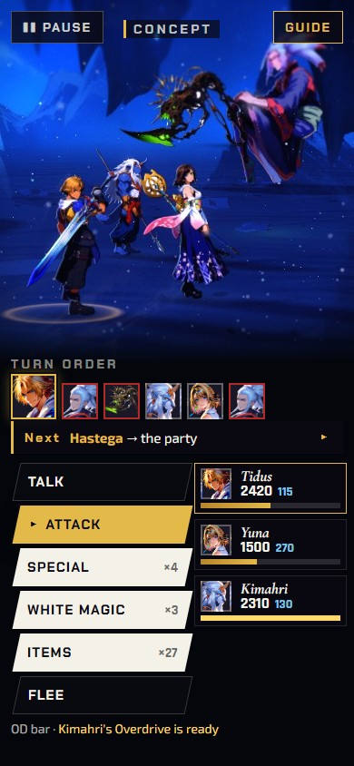
FFX · command menu
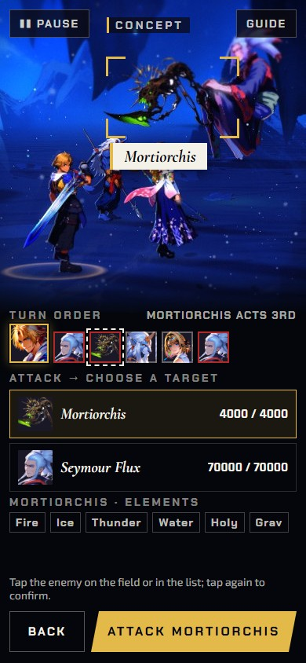
FFX · target step
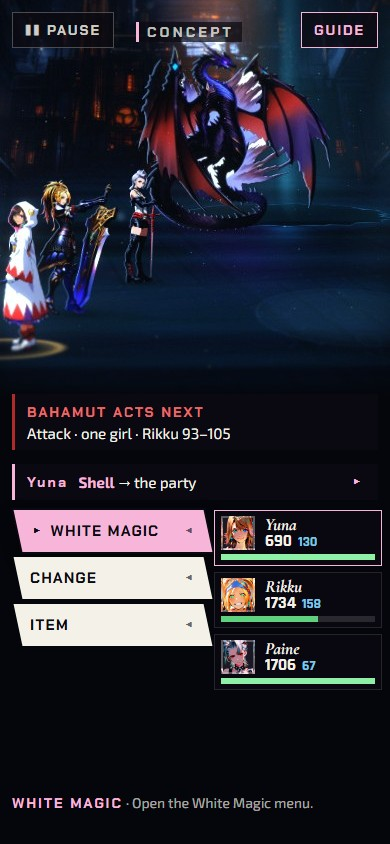
FFX-2 · command menu
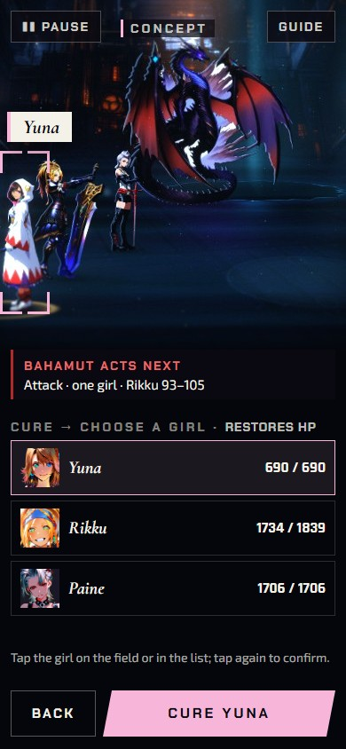
FFX-2 · target step
Commands
A vertical Ink & Gold list at the bottom left, in 42 px rows.
Party
Three cards at the bottom right, each with face, name, HP, MP and an OD bar (FFX) or ATB bar (FFX-2).
Turn order
FFX: CTB faces across the top of the sheet. FFX-2: Bahamut's next move takes that slot, and the ATB is on each card.
Target
A reticle and name plate on the field. The list becomes target rows with HP (plus Mortiorchis's elements), with Back and a large Confirm.
Advisor / guide
The advisor is one line above the commands; tap it to hide it. The strategy guide opens as a sheet from GUIDE.
Trade-off
Shows the most information at once, but has the smallest field. In FFX the enemy-move line does not fit, so it moves behind GUIDE.
BCompact railRECOMMENDEDthe field at full width (520 px), a turn rail on top, a thumb grid at the bottom
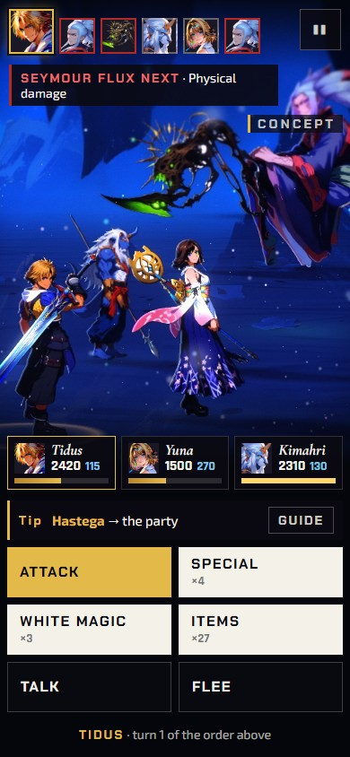
FFX · command menu
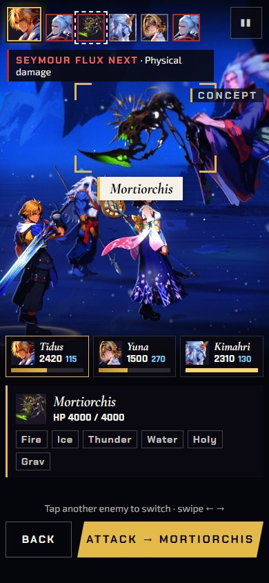
FFX · target step
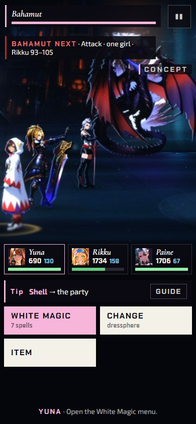
FFX-2 · command menu
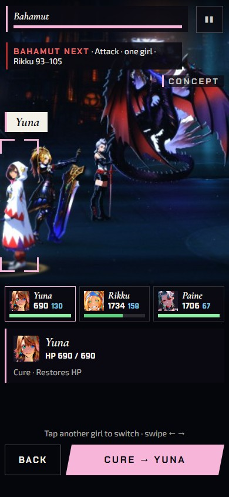
FFX-2 · target step
Commands
A 2 × 3 grid of 56 px tiles (2 × 2 for Yuna's three commands) where the thumb rests. Each tile shows its count or submenu.
Party
Three chips in a row above the grid, each with face, name, HP, MP and an OD or ATB bar.
Turn order
FFX: a CTB rail across the top; in the target step the target is outlined in it. FFX-2: Bahamut's gauge sits in the rail, and the ATB is on each chip.
Target
Tap the enemy (or girl) on the field. The grid becomes a target card with a Back / Confirm bar.
Advisor / guide
The enemy's next move sits under the rail. The advisor is a one-line tip above the grid, with GUIDE beside it.
Why recommended
It has the largest field of the upright options, every tap is within thumb reach, and nothing depends on turning the phone.
CLandscape onlyupright shows a rotate prompt; sideways gets the desktop layout redrawn for 844 × 390 at the 14 px floor
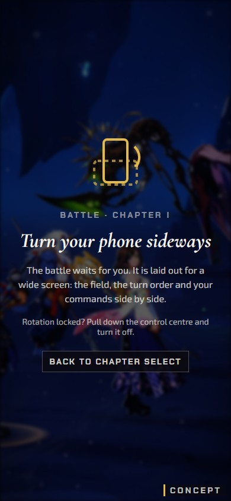
Upright · rotate prompt
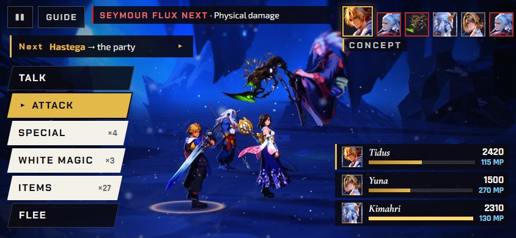
FFX · command menu · 844 × 390
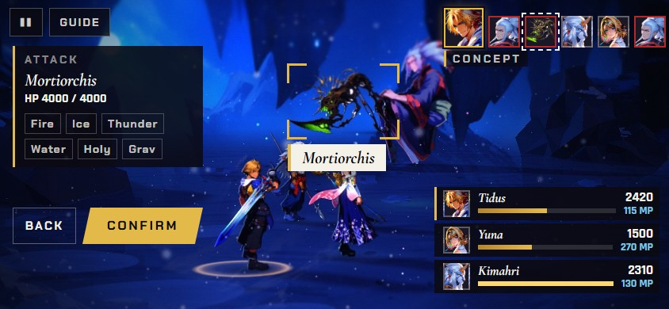
FFX · target step
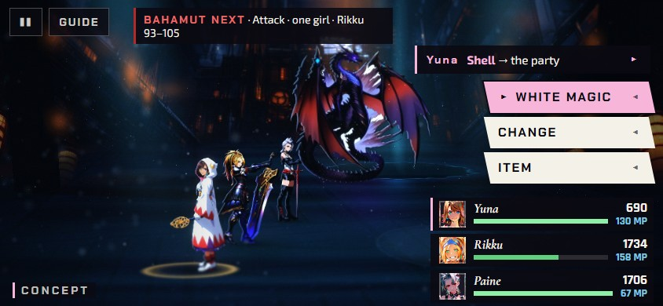
FFX-2 · command menu (chrome on the other edge)
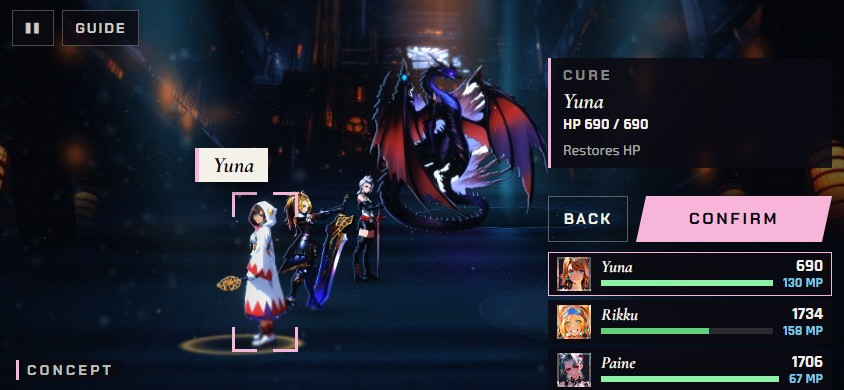
FFX-2 · target step
Commands / party / turn order
Where the desktop HUD puts them. FFX: the cascade on the left, the slabs at the bottom right, the CTB at the top right. FFX-2 is mirrored, with the stack and the rows on the right edge.
Target / advisor / guide
A target card and Confirm replace the stack. The advisor is one line under the top bar, and the guide sits behind GUIDE.
Trade-off
Closest to the desktop and to the original games. But every phone player has to turn the phone, and the desktop HUD still has to be redrawn, because scaled down it measures 4.5 px.